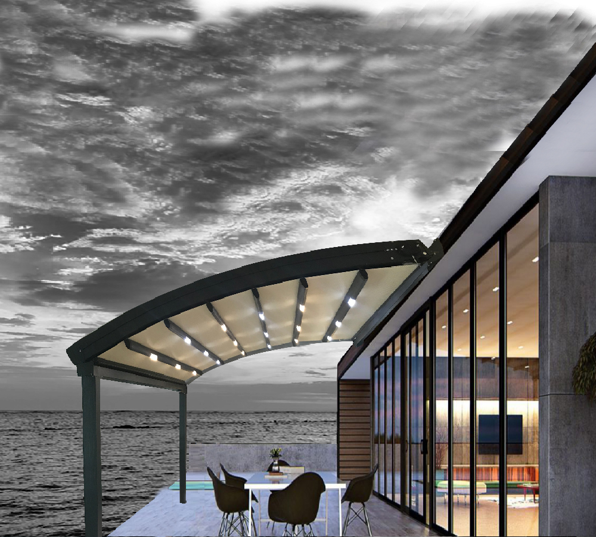
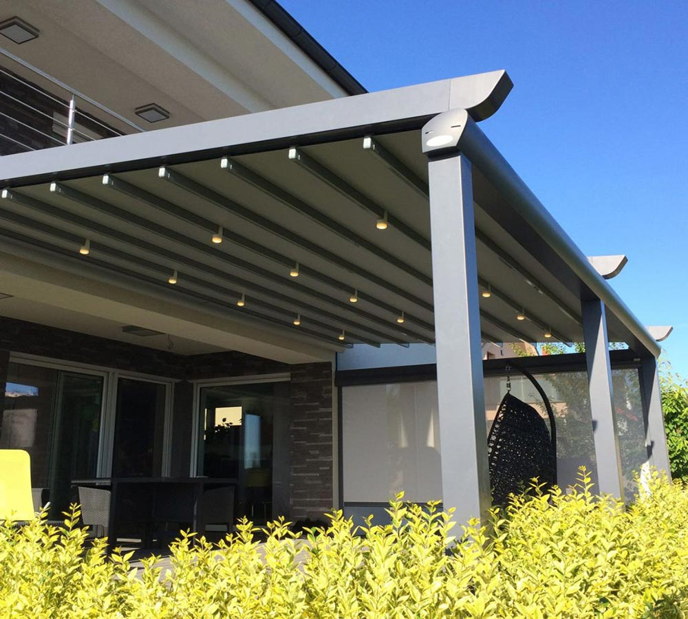
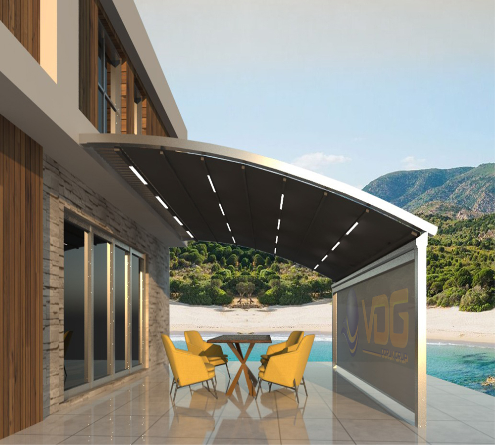
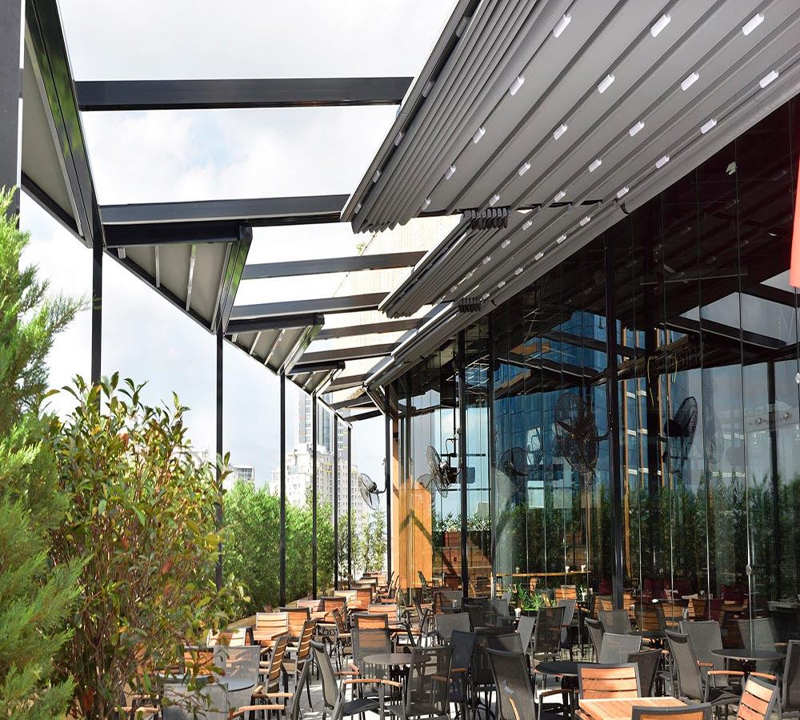
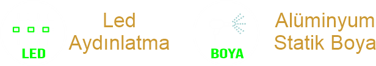
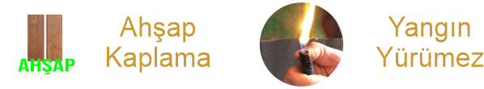
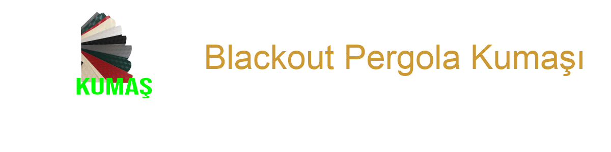
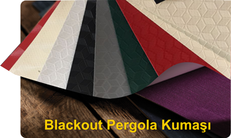

Ana Sayfa
Ürünlerimiz
Giyotin
Pergola
Bioklimatik
Rüzgar Kırıcı
Zip Perde
Wintend
Cam Tavan
Sürme Cam
Katlanır Kapı
Bahçe Çiti
Aydınlatma
Renk
Kumaş
İletişim
Ana Menü
Ürünlerimiz
Giyotin
Pergola
Bioklimatik
Rüzgar Kırıcı
Zip Perde
Wintend
Cam Tavan
Sürme Cam Sistemleri
Katlanır Kapı
Bahçe Çiti
Aydınlatma
Renk
Kumaş
İletişim
Pergola Sistemleri (Oval/Düz)




Meşe ağacından esinlenerek özel olarak tasarlanmış olan Pergola Sistemleri
otel, kafe, restauran, konut, teras, kış/yaz bahçesi, alışveriş merkezleri
yaşam alanlarını daha konforlu ve vazgeçilmez hale getirir. Giyotin, zip perde ve sürme cam sistemleri ile birlikte montajı yapılarak doğanın olumsuz yönlerini değil, sadece güzelliklerini yaşatır.
Sistem Özellikleri
- Dört mevsim yaşam alanı
- Gün ışığı ve led aydınlatma sistemi.
- Yurtdışından ithal edilen bakımı kolay ve uzun ömürlü kumaşlar kullanılan pergola sistemi sizlere dört mevsim yaşam alanı oluşturmaktadır.


TASARIM VE FONKSİYONELLİK
- Doruk Pergola Sistemleri; alüminyum taşıyıcılar üzerine adapte edilmiş, özel tasarım kumaşlarla tasarlanmış açılır & kapanır bir sistemdir.
- RTS teknolojisi kullanan pergola sistem motoru, uzaktan kumanda ile çalışır ve start-stop teknolojisi sayesinde hareket istenildiği noktada durdurulabilir.
- Sistemin tamamını veya tek bir modülü uzaktan kumanda ile çalıştırılabilir.
- Sisteme eklenebilen yağmur ve rüzgâr sensörleri, sistem açık durumdayken yağış ve fırtına gibi durumları algılar ve otomatik kapanır.
- Led ve şerit aydınlatma sayesinde 7/24 kullanım alanı oluşturur.
- Drenaj sisteminin hem kirişler hem de sütunlar içerisine entegre olan gizli kısmı, yağmur ve kar suyunun tahliye edilmesini mümkün kılmaktadır.
Pergola Nedir?
Pergola kelimesi Latincede saçak anlamına gelen “pergule” kelimesinden türemiştir. İtalyanca gölgelik anlamında kullanılan pergola, açıklıkların yatay, bükümlü ve çatı şeklinde kapatılarak gölgelik alan oluşturmak amacıyla yapılan tente işlemidir. Peki pergola ne işe yarar? Özellikle güneşlik işlevi gören pergolalar yazları güneşten koruyan en önemli sistemlerdir. Bunun yanında açılır kapanır tavanı ve su geçirmez özelliği ile pergola, ayrıca yağmurdan da korur. Kış bahçesi yapmak isteyenlerin de tercih ettiği pergola sistemi ile tentenizin altını camla kapatarak kışın da bahçenizde oturma olanağı bulabilirsiniz. Pergola sistemi tüm hava şartlarına uygun olarak tasarlanarak, her mevsim kullanılabilecek mekanlar yaratmak için kullanılır.
Pergola Nerelerde Kullanılır?
Pergola Sistemleri; gelişmiş teknolojisi ve fonksiyonel özellikleri ile otel, kafe, restauran, konut, teras, kış/yaz bahçesi, alışveriş merkezleri gibi yaşam alanlarını daha konforlu ve vazgeçilmez hale getirir. Giyotin, zip perde ve sürme cam sistemleri ile birlikte montaj imkanı vardır.
- Şerit veya spot aydınlatma seçenekleri ve renkleri siparişinize uygun olarak hazırlanmaktadır.
- Aydınlatma sistemi TSE standartlarına uygun olarak pergola sistemi içerisine monte edilmektedir.
Boya Renk Seçenekleri
- Alüminyum ve metal aksam siparişinize uygun statik toz boya ile boyanmaktadır.
- Renk kartelesi RAL kod sistemi ile belirlenmekte ve RAL kod sistemi ile sipariş oluşturulmaktadır.


Kumaş Özellikleri
Yüksek UV koruma
Alev yürümezlik
Anti-Fungal (Anti Bakteriyel)
Anti Fraktür (Bükülme/Çatlama)
Yüksek yirtilma mukavvemeti
Solmazlık (Renk Haslığı)